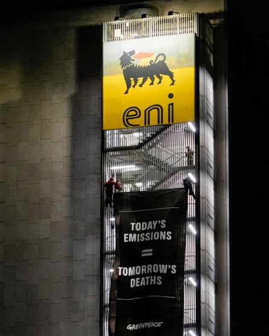

W hen Antonio Tricarico was summoned to his local police station in October and told he was being investigated for defamation, he was stressed but not shocked. Months earlier, Tricarico, the director of the Italian environment NGO ReCommon, had filed a joint legal challenge against the country’s biggest oil company, Eni, which he knew had a history of using lawyers to clamp down on critics.
The company had previously limited itself to civil defamation lawsuits, including against ReCommon, but in Tricarico’s case it initiated criminal proceedings over statements he had made in a television interview.
“There is intimidation against myself, for sure, which is not nice and is impacting daily work,” said Tricarico, who is now considering the energy and resources that would be needed if the case goes to trial. “But I think the intimidation is broader.”
Environment groups say Eni is engaging in a campaign to stifle critics, with the company having filed at least six defamation lawsuits against journalists and NGOs since January 2019.
The publicly traded company, which is under the de facto control of the Italian economy ministry, is among the world’s biggest historical polluters in terms of planet-heating gas. It plans to increase its underlying production by 3-4% a year over the course of the decade, even as roadmaps to stop the planet from heating call for rapid declines in fossil fuel use.
Court documents show Eni has initiated legal proceedings against critics including the Italian public broadcaster Rai, Greenpeace and multiple newspapers. The company has sought more than €10m (£8.6m) in damages across the known cases, according to analysis shared exclusively with the Guardian by Aria, a non-profit research organisation. Eni’s latest lawsuit does not seek compensation.
Greenpeace activists unroll a banner on the Eni headquarters in Rome in 2023.Photograph: Andrew Medichini/AP
Judges have ruled against Eni in three of the cases and another was resolved in a settlement agreement. Two more cases, including the criminal investigation into Tricarico and a civil case against Greenpeace and ReCommon, are continuing.
Simona Abbate, a climate and energy campaigner at Greenpeace Italy , said: “Eni is trying to silence dissent. It’s an international strategy that fossil companies use to limit the environmental movement.”
Campaigners say the cases are examples of “strategic lawsuits against public participation”, known as Slapps, which can bully journalists and watchdogs into silence with the threat of spurious legal action that stands little chance of success. Eni disputes the characterisation.
In April, a coalition of NGOs including Reporters Without Borders and Transparency International awarded Eni the title of “Slapp addict of the year” for its defamation lawsuits. The groups highlighted Eni’s 2024 case against Greenpeace and ReCommon after they sought to hold Eni accountable for climate damages.
The company is responsible for 0.46% of global emissions since the Industrial Revolution, according to figures from the Carbon Majors database that include emissions released by customers burning its fuels. Eni’s case against the NGOs seeks to stop them from characterising its actions as “crimes” or using similar language in campaigns.
A spokesperson for Eni said it “has not only the right but the duty to turn to the judicial authorities when faced with false and defamatory statements that damage its reputation”.
They said: “It is important to note that Eni has not initiated any Slapp suits against environmental groups, as it has not sought any financial compensation, but only the judicial truth to which it is entitled.”
In earlier defamation lawsuits that Eni lost, mostly concerning coverage of the acquisition of a Nigerian oilfield licence , the company had sought damages of €5m and €350,000 from the Italian newspaper Il Fatto Quotidiano and €5m from Rai. Eni was eventually acquitted of criminal charges in the corruption trial, which was brought about by NGOs including ReCommon.
Climate activists and oil companies are increasingly turning to the courts as fights over pollution and public opinion have become more fraught. While several oil and gas companies have been criticised by free speech campaigners for using legal threats to fight off critics, Eni has filed more lawsuits against journalists and environment groups than other European oil majors are known to have done.
Tricarico said there had been “a change of pace” since Eni’s attempts to claim damages from media organisations had failed, and it was now taking a more subtle approach by not asking for money.
“The company realised that probably this was not enough to stop the few critical voices – and actually was a pretty bad outcome in court,” he said. “My feeling is that they are moving to a different approach that you might call a ‘Slapp 2.0’.”